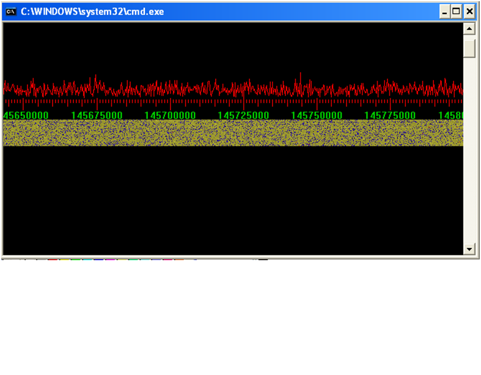

Linrad это компьютерная программа для ПК компьютеров. Когда некоторые типы оборудования, способного перенося радиосигнал в цифровой области подключается к компьютеру, на котором Linrad управлением, вся система SDR. S oftware D efined R Adio. Эта страница описывает только ограниченные аспекты принимающей стороне, но с подходящей аппаратной Linrad также может быть использован в качестве SDR передатчика, приемопередатчик, радиолокации, тест-системы и многое другое. :  Существует долгая история позади Linrad. Первые системы были полностью аналоговый с банков фильтров, а не БПФ вычислений. первый цифровой системы, построенной в 1995 году, был реализован на TMS320C25 и мог найти и отфильтровать чрезвычайно слабые сигналы от пропускной способности 3 кГц и был очень предупредителен в EME оспаривания потому что это позволило эффективное использование обоих сигналов из массива кросс Яги. Следующее поколение, 1998, использовали Pentium MMX и позволил пропускную способность 20 кГц при MSDOS. На этой системе как старый добрый широкополосный подавитель шума и новый цифровой шумоподавитель помогли сохранить уровень шума низкий. В 2000 году, когда я решил полностью переписать программу MS-DOS, ограничения в связи с высокой стоимостью для компиляторов и программ управления памятью во главе мне изменить операционную систему, чтобы Linux. Я действительно хотел бы поделиться программный код со всеми, кто может быть заинтересован, чтобы получить идеи взамен в качестве обратной связи. Я не мог ожидать любители заплатить 500 долларов США только для компилятора плюс значительное количество денег, чтобы иметь возможность использовать более 32 мегабайт памяти с dos4gw. В Linux все было бесплатно !! Программа DSP был назван Linrad но в последние годы это имя немного вводит в заблуждение.С 2005 Linrad можно использовать под Microsoft Windows также. Linrad исполняемый компилирует под Linux, так и под Microsoft Windows (98, ME, 2000 и XP) из того же набора файлов при помощи бесплатного компиляторы mingw32 и NASM. программы с открытым исходным кодом, как правило, имеют лицензию. Linrad нет. Это свободно, без авторским правом, и она может быть использована любым для любых целей.Сам Linrad просто компьютерная программа. Чтобы получить SDR каждый нуждается то, что выбирает часть радиочастотного спектра от антенны и преобразует его в цифровую форму. Для удобства все до точки, где данные первого представлена в цифровом виде внутри ПК компьютера будет называться радио оборудования на этой странице. Это означает, что звуковая карта, который помещен внутри компьютера и используется для оцифровки аудиосигнала является частью аппаратного обеспечения радиосвязи в значении этого слова на этой странице. Linrad имеет весьма общий характер и могут быть использованы с широким спектром аппаратных средств . Когда я начал переписывать пакет MS-DOS в 2000 году я решил написать для УКВ-проб приемников, которые можно было предвидеть станет стандартной архитектуры в будущем. В то же время я хотел Linrad быть полноценным замена старой системы TMS320-C25, потому что она будет работать на компьютерах, которые были устаревшими уже в 2000 году и, следовательно, легко доступными для молодых экспериментируют любителей.